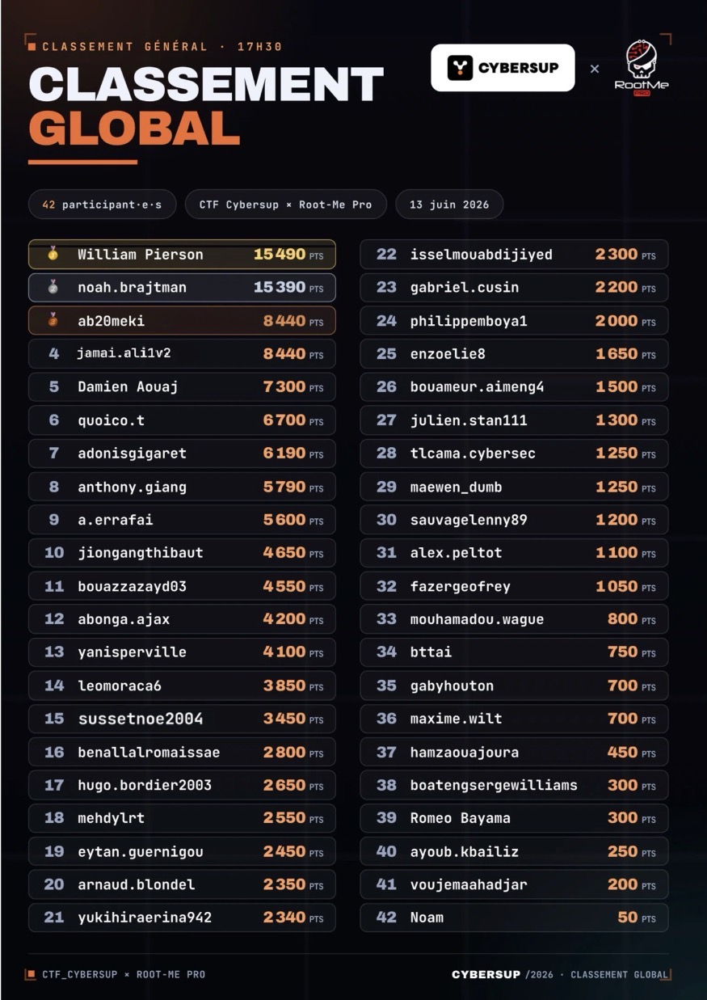

Hello World, je suis
Jamai Ali.
Étudiant ingénieur en cybersécurité à l'INSA Centre Val de Loire (France), spécialisé dans les technologies de sécurité et les systèmes d'information. Mes centres d'intérêt portent sur la détection des menaces, l'analyse de vulnérabilités et la conception d'infrastructures sécurisées.
À travers mes projets académiques et mes travaux pratiques, j'explore des domaines tels que la sécurité réseau, les tests d'intrusion, la threat intelligence et les systèmes de supervision de sécurité. J'aime concevoir des outils et des plateformes qui transforment des données de sécurité complexes en informations exploitables.
Ce portfolio présente mes projets techniques, mes travaux de recherche et mes expérimentations en cybersécurité, notamment des tableaux de bord de sécurité, des outils d'analyse de vulnérabilités et des études de sécurité d'infrastructure.
Je suis actuellement à la recherche d'un stage en cybersécurité de 4 mois, de début avril à fin juillet 2026, où je pourrai contribuer à des défis de sécurité concrets tout en continuant à développer mon expertise.

Classement final — cliquer pour agrandir